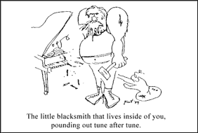

|

Lunch With The Fat Man #5
Practical advice for musicians and would-be musicians. But it's not just about the music. It's about life. It's about art. It's about lunch! Let's eat!
- - - - - - - - - -
by George Alistair Sanger
Installment index
"Spitting, as it were, in the Wind"
Hi. Sit down. What are you having? Welcome to Lunch with the Fat Man.
"It's a nice hobby," is one of my father's favorite sayings.
It refers to music. He's right, and, more important, he's funny.
The universe tells us over and over that it never meant people to use music as a primary source of income. The future always seems unsure to musicians, and with good reason - it is unsure. Yet the Fat Man knows of at least one frame of mind that will allow you to face the "Dead-End Career," as Beethoven's mom called it, not only with a sense of purpose, but with increased chances of making a lasting impression on the world. I'll illustrate it in terms of the songwriter, as writing is the most important part of music, but it applies fairly well to practicing and inventing at your instrument, for you non-writers.
Let's turn the Fat spotlight to Paul McCartney. "Oh gross," you say, "McCartney the sellout. Paul is dead." But the very attributes of Paul's that make you say that are the traits that every artist needs and has to nourish and encourage in himself.
McCartney. Remember, he does elaborate solo album projects, which require a lot of individual effort. Have you ever done recordings with string arrangements? Or with chord progressions that don't repeat? Have you recorded a song that's composed of bunches of little melodies instead of a cohesive master plan? Forget whether it's good or not - it's hard. Have you ever done anything that hard? And more often than not, in fact, people complain openly about his product since the Beatles.
Now here's a guy who doesn't have to do anything else as long as he lives. Why does he work so hard only to gather abuse? What's the use? It sure isn't because he thinks he'll be a star someday. He doesn't need more money.
Answer: I think he has to spit in the wind just to keep from drowning in his own juices.
Therein, also, lies the charm of Stevie Wonder. For both him and McCartney, a lifetime of putting out product. Why? Perhaps because they can't stop. And Austin's legendary Daniel Johnston - a man who just seems to gush songs, as if it were through no choice of his own. Since I am about to clip my toenails, I draw potentially hazardous analogy. "Please record my songs," he says, as if he were the man whose toenails wouldn't stop growing, and he is begging us to clip... no, never mind, I was right, and it's too awful.
But never mind that, let's bring this idea home. Do you have a giant factory of music in you, which threatens to create a glut in your gut every day you don't express yourself'? Do you, like Mozart, orchestrate complete songs in your head while you are being witty at aristocratic parties? Be honest. Hardly anyone does.
 But if you have even the tiniest blacksmith shop of this kind of creative urge, it would be well worth your time to focus attention on it. Whenever you hear it calling to you, telling you that it has to relieve itself, heed the call immediately, grab a 3 by 5 card and start writing. If half a chorus is all you get easily, try right then to write the other half. Draw your creativity out just a little more each time. Massage, feed, nurture, and exercise that little smithy until he's pounding out a couple of good horseshoes a week. Then step up production. Build plows, wagons, a U-boat. Increase your creative output, especially that which comes from those sincere needs we discussed, and you will increase your need to put out. This kind of attention, nay, addiction to the part of you that has to write is arguably the best thing you can do for your music.
But what's the use, you say? Spitting in the wind, I say. True, it doesn't lend any new meaning or usefulness to the fact that you're a musician. Not to your parents or the public, that is. But once you're addicted to creating music, it has a meaning to you - you need it. By narrowing your focus this way, you can become a monomaniacal fiend like Ravi Shankar and all those other really good cats - a nut with a purpose. And when you really need something; you will worry a whole lot less about what your parents and friends think of you, and a whole lot less of how hard the world makes things for you. There. A workable viewpoint, as promised in paragraph 3. And my tongue, by the way, is not in my cheek this time.
Another thing - when you're addicted to writing, you're much more likely to create better music than you are when you're just sitting around the house saying We need to write some slow songs. What's a good thing to write slow songs about? Oh, I know...we'll write one about a guy who really loves this girl..." As a testament to this, I point out that longevity and stature seem to be the exclusive property of the big Music Gushers.
So remember - be a music making machine. Teach yourself to need it, and then fill the need. What's that you say? A flaw in my logic? Have I asked you to short-change yourself, building a need in yourself in order to feel that what you do is needed? A makework project? Is your musical career to be the WPA of your mind? Sure.
But I ask you, what in life is any more meaningful? Hey, the most you can hope to achieve in this crummy blue mothball is to save it from extinction - pretty much the same kind of makework project, don't you think? Besides, if there aren't a few deluded mental cases on it writing music all day long, what's the point of saving it?
Say, this was great. Let's have lunch more often.
 Next page | "Preparing Your Instruments for the Studio" Next page | "Preparing Your Instruments for the Studio"
1, 2, 3
|